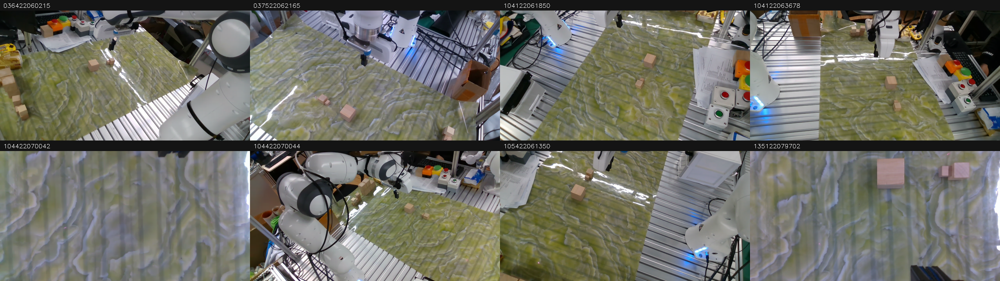

Smoke=True; lưu8 bước; đang xem index0, segment0, có5/20 targets thật. Không có target thật ở cuối segment thì mốc đó không thành sample ACT.

| File | Shape | Dtype |
|---|---|---|
| images.npy | (8, 8, 360, 640, 3) | uint8 |
| state.npy | (8, 8) | float32 |
| action.npy | (8, 8) | float32 |
| timestamps_ms.npy | (8,) | int64 |
| segment_ids.npy | (8,) | int32 |
| frame_indices.npy | (8, 8) | int64 |
| camera_timestamps_ms.npy | (8, 8) | int64 |
| state_timestamps_ms.npy | (8,) | int64 |
[0.4994046986103058, 0.00019040591723751277, 0.2986524999141693, 0.0017129508778452873, -9.486294584348798e-05, -0.9999984502792358, -0.000414306327002123, 0.0]
Target bắt đầu t+1. sample.json chứa targets chưa normalize, mask và tuổi ảnh/state; is_pad=True là phần bỏ qua trong loss. Ảnh PNG giữ RGB nhìn được, không phải tensor đã normalize.
| Index | Timestamp(ms) | Segment | State vật lý8D |
|---|---|---|---|
| 0 | 1641472329100 | 0 | [0.4994046986103058, 0.00019040591723751277, 0.2986524999141693, 0.0017129508778452873, -9.486294584348798e-05, -0.9999984502792358, -0.000414306327002123, 0.0] |
| 1 | 1641472329200 | 0 | [0.499405175447464, 0.00019338664424140006, 0.2986540198326111, 0.0017116504022851586, -9.151409176411107e-05, -0.9999984502792358, -0.00041417934698984027, 0.0] |
| 2 | 1641472329300 | 0 | [0.49940356612205505, 0.00019172937027178705, 0.29865145683288574, 0.0017149689374491572, -9.353476343676448e-05, -0.9999984502792358, -0.00041426782263442874, 0.0] |
| 3 | 1641472329400 | 0 | [0.4994046092033386, 0.00019150237494613975, 0.2986530661582947, 0.0017126861494034529, -9.462871094001457e-05, -0.9999984502792358, -0.00041392113780602813, 0.0] |
| 4 | 1641472329500 | 0 | [0.49940454959869385, 0.00019172910833731294, 0.2986539900302887, 0.0017114841612055898, -9.063646575668827e-05, -0.9999984502792358, -0.00041427844553254545, 0.0] |
| 5 | 1641472329600 | 0 | [0.4994035065174103, 0.0001942591625265777, 0.2986522316932678, 0.0017141907010227442, -9.149932157015428e-05, -0.9999984502792358, -0.0004137263458687812, 0.0] |
| 6 | 1641472333200 | 1 | [0.5705362558364868, -0.06186278536915779, 0.3131481409072876, 0.05766681209206581, 0.06143232434988022, -0.9960619807243347, 0.02758791111409664, 0.0] |
| 7 | 1641472333300 | 1 | [0.5705362558364868, -0.06186278536915779, 0.3131481409072876, 0.05766681209206581, 0.06143232434988022, -0.9960619807243347, 0.02758791111409664, 0.0] |